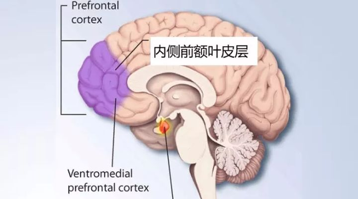
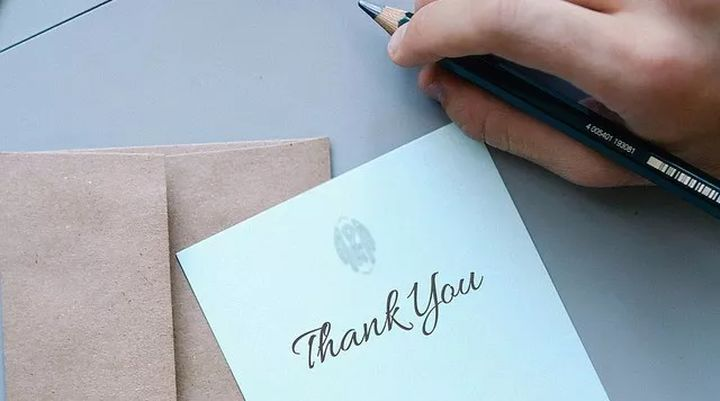
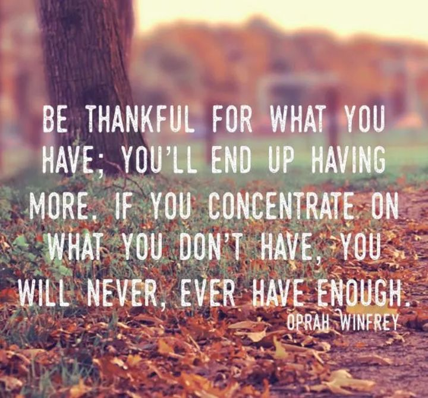

今年的11月23日是美国的感恩节（Thanksgiving），是家人团聚，感谢重要的人的日子。姚脑师也在曼城的 International Society 和世界各地的朋友们吃了顿传统的晚餐。
英美的料理虽然都比较灰暗，但是我还是很感激 International Society 为国际文化交流做出的贡献。不论是老是少，还在读还是已经工作了，能从世界各地相聚在曼城来一起交流，做游戏，在寒冷的异国他乡依然能够感受到家一般的温暖。
*“让我们感谢给我们带来欢乐的人。他们是迷人的园丁，让我们的灵魂绽放。”* – 法国文豪Marcel Proust如是说。
**感恩对我们的身心健康有极大的益处。**近年的研究表明，感恩能改善你的睡眠 [1]，拉近和恋人的关系 [2]，减少患病及伤痛，激励你锻炼身体 [3]，还能减轻压力 [4] 等，成本低如粪土，疗效堪比吸猫，老厉害了。
1. 为什么感恩对身心有益呢？
脑科学家们不会跟你BB什么善报因果啊，扯什么哲学问题。他们可实在了，先扫扫大脑看看感恩都激活了哪些脑区再说 [5]。
扫大脑容易，关键是不给别人好处，人家凭啥感恩捏？科学家挺寒酸的，拿不出钱“帮助”被试者，于是就想出了让被试自己YY的实验。他们让被试人想象自己是当年在纳粹屠杀下的逃亡者，在逃亡途中得到了陌生人的帮助。被试人会阅读像这样的小故事：
“你一家人在寒冷的冬夜逃命，一位好心的农民收留了你们过夜。第二天，德国纳粹士兵闯进了农民的家，把他们都赶了出去，然后把他的农场一把火烧了”
（乱编这种故事，这些科学家有毒么……？）
Anyway，读完故事后被试人要使劲脑补文中描述的情景，然后给自己的感恩程度打分（1分=小感激，4分=感恩戴德）。
如果被试觉得自己很感动，那脑中和感恩相关的区域就要更活跃对不对？
研究者分析了脑成像数据后发现被试人的感激程度和内侧前额叶皮质（medial prefrontal cortex）的神经活动呈正相关（如下图紫色区域所示）。也就是说你越感激的时候，额头前面这块大脑就越high。

内侧前额叶皮质high的话能说明什么问题呢？
我们知道大脑不同的区域有不同的分工，如视觉区域负责加工视觉信息，听觉区域负责加工声音等。**内侧前额叶皮质相当于是居委会的大妈，主要管社交和情感方面的事情 [6]。**小区里谁犯了错要自我反省（self-reflection），新住户要互相了解（person perception），邻里如何和谐相处（theory of mind）[7]，如何天天保持好心情（emotion regulation）[8] 等各种街坊琐事都是由“内妈”来管，感恩也不例外。
内妈在感恩中扮演了重要角色，这说明感恩是一种**社会情感。感恩的时候内妈会跑出来对他人的动机和情感进行分析。通过引导你意识到他人给你带来的帮助，她能让你获得一种「人间自有真情在」的愉悦感。**有意思的是，内妈这一通疏导，不仅让你心里爽了，还能减轻各种疼痛 [9,10]，腰不酸腿不疼了，睡眠还有改善，不愧是令人身心舒畅的好大妈！
2. 感恩能持久的改善大脑
内妈厉害是厉害，可是读科学家写的毒文YY出来的感恩跟亲身经历好像还不是一回事。况且上面这些被试人本来就挺健康的，所以也看不出来感恩是不是能改善心理健康呢？
于是另一帮科学家 [11] 找了大约300个精神抑郁的学生。这些学生要接受3个月的临床心理辅导来改善他们的精神状况。为了研究感恩能不能治抑郁，科学家把学生随机分到两个组。一组在心理辅导的前三周每周写一封感谢某人的信。第二组只接受基本的心理辅导，为对照组。
三封感谢信写完后，感恩组就开挂了。从第4周开始感恩组的心理健康状况就已经显著好于对照组。这说明和心理辅导相结合，练习感激他人能更有效的改善精神健康。

12周心理辅导结束后，科学家把感恩组和对照组的部分被试召回扫大脑。他们觉得编二战故事什么的都太low了，于是就开始编捡钱的故事。
被试在实验中会随机的碰到陌生人给钱，比如“大宝慷慨的给了你20块钱”。接着跳出一个窗口说 “哎，人家大宝对你辣么好，你要不要拿一点出来捐给我们红十字会？” 大部分被试人捡到钱都心存感激，会拿一部分钱出来捐给慈善。
根据捐钱数量的大小，科学家就可以较客观的量化被试人的感恩程度，来比较感恩组和对照组之间大脑活动的不同。虽然距离写感谢信的练习已经过去了9周，感恩组的 “内妈”，即内侧前额叶皮层，仍然要比对照组的要更活跃更敬业一点。
这说明写感谢信可以让内妈开心好久哎。将写感谢信这种简单的练习与心理辅导结合，不仅能更有效的改善大脑，而且这种变化还比较稳定和持久。
3. 感谢拥有，知足常乐
这么看来，练习感激他人好像是个保持大脑健康的好方法？
可不是么～好人有好报呗！
感恩能帮助我们主动意识到他人给你带来的帮助，并获得「人间自有真情在」的愉悦感。因为感恩让我们把注意力都集中在「正能量」上，所以我们就自然会远离负面情绪的困扰。当你身心愉悦了，自己也更容易去帮助别人，让别人也心存感激。以此循环，这就形成了一个正能量传播链。
更好的消息是，即使你不善于表达，不好意思直接感激别人也没有关系。在上面这个实验中，感恩组里只有23%的被试人把写好的感谢信发出去了。那些没有发信的人虽然只是在心里默默的感恩，但是他们的精神状况依然获得了显著好转。
既然感恩有百益无一害，咱们何乐而不为呢？我们可以从珍惜身边的人和事做起，学会多感恩，多传递正能量。
**纠结没得到的，你永远都不会满足 感恩你拥有的，你会得到更多 ** – End –

参考文献
- Wood, A. M., Joseph, S., Lloyd, J., & Atkins, S. (2009). Gratitude influences sleep through the mechanism of pre-sleep cognitions. Journal of Psychosomatic Research, 66(1), 43-48.
- Algoe, S. B., Gable, S. L., & Maisel, N. C. (2010). It’s the little things: Everyday gratitude as a booster shot for romantic relationships. Personal Relationships, 17(2), 217-233.
- Emmons, R. A., & McCullough, M. E. (2003). Counting blessings versus burdens: an experimental investigation of gratitude and subjective well-being in daily life. Journal of Personality and Social Psychology, 84(2), 377.
- Cheng, S. T., Tsui, P. K., & Lam, J. H. (2015). Improving mental health in health care practitioners: Randomized controlled trial of a gratitude intervention. Journal of Consulting and Clinical Psychology, 83(1), 177.
- Fox, G. R., Kaplan, J., Damasio, H., & Damasio, A. (2015). Neural correlates of gratitude. Frontiers in psychology, 6.
- Wood, J. N., & Grafman, J. (2003). Human prefrontal cortex: processing and representational perspectives. Nature Reviews Neuroscience, 4(2), 139-147.
- Amodio, D. M., & Frith, C. D. (2006). Meeting of minds: the medial frontal cortex and social cognition. Nature Reviews Neuroscience, 7(4), 268-277.
- Etkin, A., Egner, T., & Kalisch, R. (2011). Emotional processing in anterior cingulate and medial prefrontal cortex. Trends in Cognitive Sciences, 15(2), 85-93.
- Eisenberger, N. I., Master, S. L., Inagaki, T. K., Taylor, S. E., Shirinyan, D., Lieberman, M. D., & Naliboff, B. D. (2011). Attachment figures activate a safety signal-related neural region and reduce pain experience. Proceedings of the National Academy of Sciences, 108(28), 11721-11726.
- Baxter, H. J., Johnson, M. H., & Bean, D. (2012). Efficacy of a character strengths and gratitude intervention for people with chronic back pain. The Australian Journal of Rehabilitation Counselling, 18(2), 135-147.
- Kini, P., Wong, J., McInnis, S., Gabana, N., & Brown, J. W. (2016). The effects of gratitude expression on neural activity. NeuroImage, 128, 1-10.